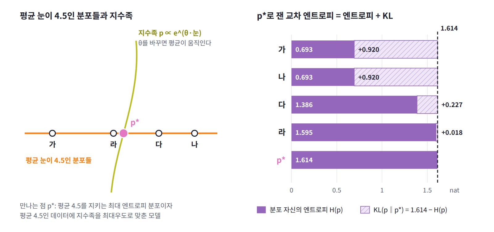

쌍대: 최대우도로 학습한 모델이 데이터를 되풀이하는 이유
지금까지는 평균이 먼저 주어지고 분포를 골랐다. ML에서는 순서가 반대여서, 지수 모양의 모델을 먼저 정해 두고 데이터에 최대우도로 맞춘다. 그런데 왜 그렇게 학습한 모델이 데이터의 평균을 그대로 되풀이하는 것일까?
로그우도의 기울기
지수족 모델에서 데이터의 평균 로그우도는 Σθₐ⟨φₐ⟩_데이터 − ln Z(θ)이고, θₐ로 미분하면 ⟨φₐ⟩_데이터 − ⟨φₐ⟩_모델이 나온다. 기울기가 0인 곳은 모델의 평균이 데이터의 평균과 같아지는 곳, 곧 데이터의 평균을 제약으로 삼은 최대 엔트로피 분포다.
이 눈으로 데이터 {−2, −1, 1, 2}에 E_θ = θx²/2를 맞춘 결과를 다시 읽어 보자. 이 모델은 에너지가 x²/2 하나에 비례하는 지수족이므로, 최대우도로 맞추는 것은 「x²의 평균이 2.5라는 것만 알 때의 최대 엔트로피 분포」를 고르는 것과 같고, 답은 분산 2.5인 정규분포, 승수는 θ = 1/2.5 = 0.4다. 데이터에 봉우리가 몇 개인지, 꼬리가 얼마나 두꺼운지가 모델에 들어가지 않은 것은 결함이 아니라 설계다. 특징으로 x² 하나만 골랐으니 그 평균 말고는 아무것도 단정하지 않도록 만들어진 것이다. 특징을 고르는 일이 곧 무엇을 믿을지 고르는 일이다.
코드로 확인: 로지스틱 회귀
이번에는 클래스 세 개의 로지스틱 회귀를 규제 없이 끝까지 학습한다. 특징은 입력 x, 그 제곱 x², 그리고 절편이고, 클래스마다 가중치 한 벌을 둔다. 학습이 끝난 뒤 특징과 원-핫 라벨을 곱해 더한 값이 데이터와 모델에서 같은지, 손실이 모델 예측 분포의 엔트로피 평균과 같은지, 그리고 특징에 넣지 않은 양도 맞춰지는지 확인한다.
import torch
import torch.nn.functional as Fn
torch.manual_seed(0)
# 클래스 3개, 입력 2차원. 클래스마다 중심이 다른 가우시안에서 400, 250, 150개 (서로 겹치게)
sizes = [400, 250, 150]
centers = torch.tensor([[0.0, 0.0], [1.5, 0.5], [0.5, 1.5]], dtype=torch.float64)
x = torch.cat([centers[k] + torch.randn(m, 2, dtype=torch.float64) for k, m in enumerate(sizes)])
y = torch.cat([torch.full((m,), k) for k, m in enumerate(sizes)])
X = torch.cat([x, x ** 2, torch.ones(len(x), 1, dtype=torch.float64)], 1) # 특징: x, x², 절편
Y = Fn.one_hot(y, 3).double()
W = torch.zeros(X.shape[1], 3, dtype=torch.float64, requires_grad=True) # 가중치 = 라그랑주 승수
opt = torch.optim.LBFGS([W], max_iter=1000, tolerance_grad=1e-14, tolerance_change=1e-16,
line_search_fn="strong_wolfe")
def closure():
opt.zero_grad()
loss = Fn.cross_entropy(X @ W, y)
loss.backward()
return loss
opt.step(closure)
with torch.no_grad():
P = torch.softmax(X @ W, 1)
print("클래스별 개수 데이터:", Y.sum(0).tolist(), " 모델:", [round(v, 3) for v in P.sum(0).tolist()])
print(f"특징 × 원-핫 합의 최대 차이 (데이터 − 모델): {(X.T @ (Y - P)).abs().max():.1e}")
print(f"학습 손실 (교차 엔트로피) : {Fn.cross_entropy(X @ W, y):.4f}")
print(f"모델 예측 분포의 엔트로피 평균: {-(P * P.log()).sum(1).mean():.4f}")
m = x[:, 0] * x[:, 1] > 1 # 특징에 넣지 않은 양: x₁x₂ > 1인 샘플
print("x₁x₂ > 1인 샘플의 클래스별 개수 데이터:", Y[m].sum(0).tolist(),
" 모델:", [round(v, 1) for v in P[m].sum(0).tolist()])
# 클래스별 개수 데이터: [400.0, 250.0, 150.0] 모델: [400.0, 250.0, 150.0]
# 특징 × 원-핫 합의 최대 차이 (데이터 − 모델): 4.2e-06
# 학습 손실 (교차 엔트로피) : 0.6951
# 모델 예측 분포의 엔트로피 평균: 0.6951
# x₁x₂ > 1인 샘플의 클래스별 개수 데이터: [48.0, 95.0, 53.0] 모델: [44.8, 96.8, 54.3]
절편은 모든 샘플에서 1인 특징이므로, 그 평균을 맞추면 클래스별 예측 확률의 합이 클래스별 개수와 같아진다. 다른 특징들에 대해서도 데이터와 모델의 차이가 10⁻⁶ 수준으로 사라졌고, 학습 손실 0.6951은 모델 예측 분포의 엔트로피 평균과 같다. 반면 특징에 넣지 않은 x₁x₂ > 1이라는 영역에서는 클래스별 개수가 48, 95, 53인데 모델은 44.8, 96.8, 54.3을 내놓는다. 모델은 넘겨받은 평균만 지키고, 넘겨받지 않은 것에 대해서는 아무것도 단정하지 않는다.
평균만으로 정해지는 교차 엔트로피
위의 로지스틱 회귀에서 학습 손실 0.6951은 모델 예측 분포의 엔트로피 평균과 같았다. 손실이 모델 자신의 엔트로피와 같아지는 것은 왜일까? 둘 사이에는 기울기가 0이라는 것보다 더 강한 관계가 있다. ln p_θ(x)가 특징들의 일차식이므로, 평균 φ̄를 지키는 분포라면 무엇이든 p_θ로 잰 교차 엔트로피가 φ̄만으로 정해진다.
부등호는 교차 엔트로피가 엔트로피보다 작을 수 없다는 사실이고, 등호는 p = p_θ일 때 성립한다. 그래서 대괄호를 θ에 대해 가장 작게 만드는 문제, 곧 데이터의 음의 로그우도를 줄이는 최대우도와, 평균을 지키는 p 가운데 엔트로피를 가장 크게 만드는 최대 엔트로피가 같은 값 H_max에서 만난다. 학습이 끝난 지수족 모델의 교차 엔트로피 손실이 모델 자신의 엔트로피와 같아지는 것이 바로 이 등호다. 이처럼 한 문제의 최솟값과 다른 문제의 최댓값이 같은 값에서 만나는 짝을 쌍대 (같은 답을 반대쪽에서 찾는 짝 문제, duality)라 하고, 최대우도는 최대 엔트로피 문제를 쌍대 쪽에서 푸는 셈이다. 대괄호를 θ로 두 번 미분하면 특징의 공분산이 나오므로 대괄호는 볼록하고, 특징끼리 겹치지만 않으면 승수가 하나로 정해진다.

ML에서: 로지스틱 회귀는 최대 엔트로피 모델이다
1990년대 IBM의 기계 번역 연구진은 영어 in이 문맥에 따라 프랑스어 dans, en, à 등으로 옮겨지는 확률을, 「이런 문맥에서 dans가 쓰이는 비율」 같은 평균만 지키는 최대 엔트로피 분포로 모델링했다. 버거와 델라 피에트라 형제(1996)는 그 결과가 제약마다 조절할 매개변수가 하나씩 있는 지수 모양의 모델이며, 그 매개변수는 학습 데이터의 우도를 최대화해서 얻는다는 것을 보이고 이렇게 정리했다. 「그러므로 최대 엔트로피와 최대우도라는 서로 다른 두 철학적 접근이 같은 결과를 낸다. 제약을 지키는 모델 가운데 엔트로피가 가장 큰 모델은 표본 데이터를 가장 잘 예측하는 지수 모델과 같다.」
이 장을 마친 독자는 이 문장을 「softmax 분류기의 가중치는 특징 × 라벨 평균마다 붙은 라그랑주 승수이고, 교차 엔트로피로 학습하는 것은 그 평균들을 데이터와 맞추는 최대 엔트로피 문제를 쌍대 쪽에서 푸는 것」으로 읽게 된다. 앞의 코드에서 본 것처럼 학습이 끝나면 클래스별 예측 확률의 합이 클래스별 개수와 같고, 손실은 모델의 예측 엔트로피와 같다. 신경망 분류기에서도 앞 층이 만든 표현이 특징, 마지막 선형층의 가중치가 승수이므로, 마지막 층이 수렴하면 그 표현의 평균이 데이터와 맞춰진다.
문제 4. 봉우리 두 개를 못 보는 모델
모델 N(0, 2.5), 곧 θ = 0.4인 E_θ(x) = θx²/2를 세 가지 데이터로 평가한다. (가) {−2, −1, 1, 2}, (나) ±1.5에 봉우리가 있고 표준편차 0.5인 가우시안 두 개를 반씩 섞은 분포, (다) x² 평균이 2.5인 라플라스 분포. 세 경우의 평균 음의 로그우도를 구하라. 이 모델이 데이터의 봉우리 개수를 모른다는 것은 약점인가?

(가)는 1.877이었고, (나)와 (다)는 샘플 20만 개씩 뽑아서 돌려 볼게요. (나)는 1.877, (다)는 1.879요. 셋이 거의 똑같아요. 어? 코드를 잘못 짰나…

이상한데요. (나)는 봉우리가 ±1.5에 있어서 0 근처에는 샘플이 거의 없고, 모델은 0에서 밀도가 제일 높잖아요. 엉뚱한 곳에 확률을 쏟은 모델이니까 손실이 더 커야 하지 않아요?

모델의 로그우도를 x에 대해 써 보세요.

ln p_θ(x) = −0.2x² − ½ ln(2π/0.4)예요. x²에만 의존하니까 평균을 내면 x²의 평균만 남아요. (나)의 x² 평균은 1.5² + 0.5² = 2.5이고 (다)도 2.5로 맞췄으니, 셋 다 정확히 1.877이에요. 민준이의 (다)가 1.879인 건 샘플의 x² 평균이 2.51로 나와서고요. 아, 교차 엔트로피가 평균 φ̄만으로 정해진다는 식이 이거였네요.

그래요. 이 모델은 x² 평균이 2.5인 어떤 데이터를 만나도 손실이 1.877이에요. 봉우리가 둘인 모델을 만들면 (나)에서는 더 잘하겠지만, x² 평균이 같은 다른 데이터에서는 1.877보다 나빠질 수 있어요. x² 평균만 안다는 조건 아래서 가장 나쁜 경우의 손실을 가장 작게 만드는 모델이 바로 최대 엔트로피 분포라는 것이 알려져 있어요(Grünwald·Dawid 2004).

게임 이론 수업에서 배운 미니맥스네요. 자연이 제약 안에서 제일 곤란한 데이터를 고른다고 할 때 둘 수 있는 가장 안전한 수요.

그럼 봉우리를 못 보는 건 약점이 아니라 보험이네요. 그래도 (나)처럼 봉우리가 뚜렷하면 손해 보는 건 맞잖아요. 얼마나 손해예요?
데이터 분포 p와 모델 사이의 KL이 손해예요. 교차 엔트로피가 p의 엔트로피와 KL의 합이니까 KL = 1.877 − H(p)죠.

(나)의 엔트로피는 수치 적분으로 1.415라서 0.462 nat을 손해 보고, (다)는 라플라스의 엔트로피가 1 + ln(2 × 1.118) = 1.805라서 0.072만 손해예요. 봉우리 두 개는 x² 하나로는 안 보이니까 x⁴ 같은 특징을 하나 더 넣어야겠네요.

틈이 H_max − H(p)라는 거, 피타고라스 정리 같아. 특징을 늘리면 H_max가 내려가면서 틈이 줄어드는 거고.

너 또 기하로 가는구나. 나는 그냥 특징 하나 더 넣을래.